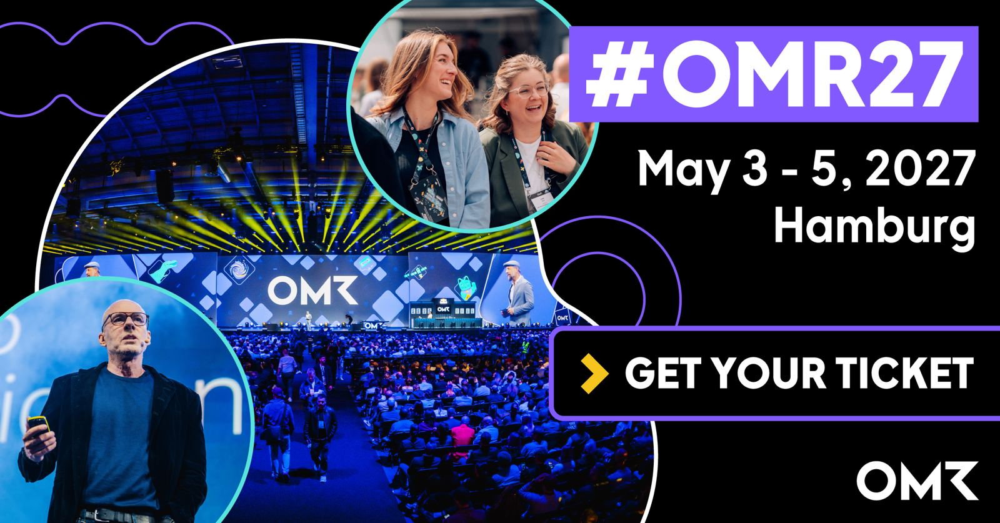

Conferences · Tech
OMR Festival 2027
- Dates
- –
- Venue
- Hamburg Messe, Messeplatz 1, 20357 Hamburg
- Location
- Hamburg, Germany
- Format
- In-person
- Category
- Tech
- Industry
- Tech
- Organiser
- OMR
- Price
- OMR27 Festival Pass €499; OMR27 Black Pass €1,999 (official JSON-LD offers, tickets.omr.com/omr27).
- Official website
- https://omr.com/en/events/festival/
- Tickets
- https://tickets.omr.com/omr27/
About
Dates are local to the host city (Central European Time, UTC+1 / UTC+2 in summer).
Topics: digital marketing, tech, media.
No organiser attendance figure found on the official pages fetched 24 Nov 2026. Ranked by our estimated size tier 'very large' (100,000+ attendees/visits), a judgement from format, venue and scale, not an official number.
Sources
Hotels
- SIDE Design Hotel Hamburg — 5★ · Drehbahn 49, 20354 Hamburg, Germany · 1.0 km from the venue · Price on request
- Grand Elysée Hamburg — 5★ · Rothenbaumchaussee 10, 20148 Hamburg, Germany · 1.0 km from the venue · Price on request
- Fairmont Hotel Vier Jahreszeiten Hamburg — 5★ · Neuer Jungfernstieg 9 - 14, 20354 Hamburg, Germany · 1.3 km from the venue · Price on request
- The Fontenay Hamburg — 5★ · Fontenay 10, 20354 Hamburg, Germany · 1.5 km from the venue · Price on request
- Hotel Atlantic Hamburg — 5★ · An der Alster 72 - 79, 20099 Hamburg, Germany · 2.0 km from the venue · Price on request · Venue page
- CONRAD Hamburg — 5★ · Bugenhagenstrasse 8, 20095 Hamburg, Germany · 2.2 km from the venue · Price on request
- Mercure Hotel Hamburg Mitte — 4★ · Schröderstiftstr. 3, 20146 Hamburg, Germany · 0.3 km from the venue · Price on request
- NH Collection Hamburg City — 4★ · Feldstr. 53-58, 20357 Hamburg, Germany · 0.6 km from the venue · Price on request
- Radisson Blu Hotel Hamburg — 4★ · Marseiller Straße 2, 20355 Hamburg, Germany · 0.8 km from the venue · Price on request
- NH Hamburg Mitte — 4★ · Schäferkampsallee 49, 20357 Hamburg, Germany · 1.0 km from the venue · Price on request
Venue
- Hamburg Messe — Exhibition grounds · Messeplatz 1, 20357 Hamburg